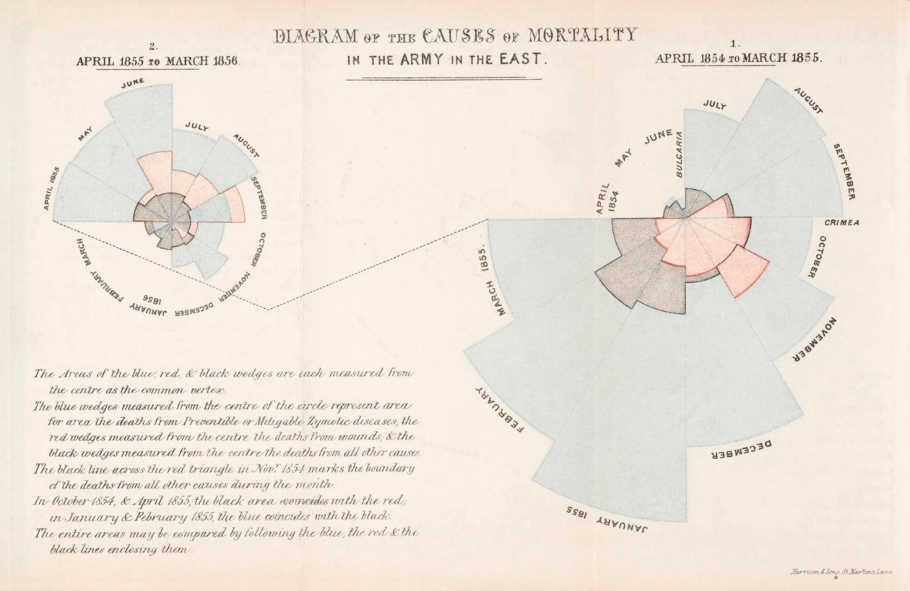
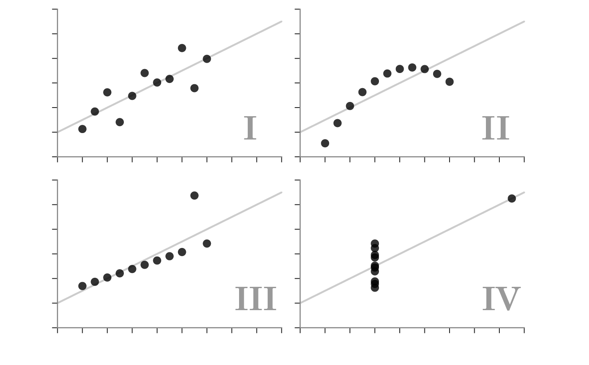
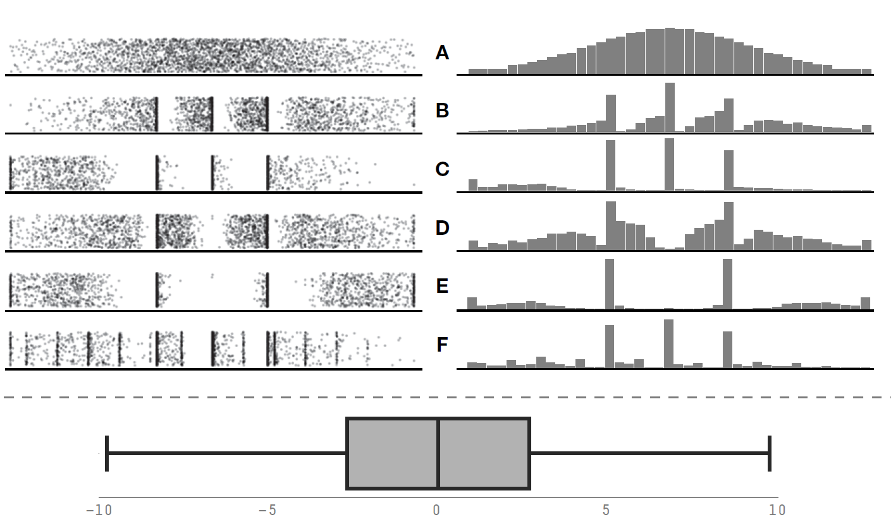
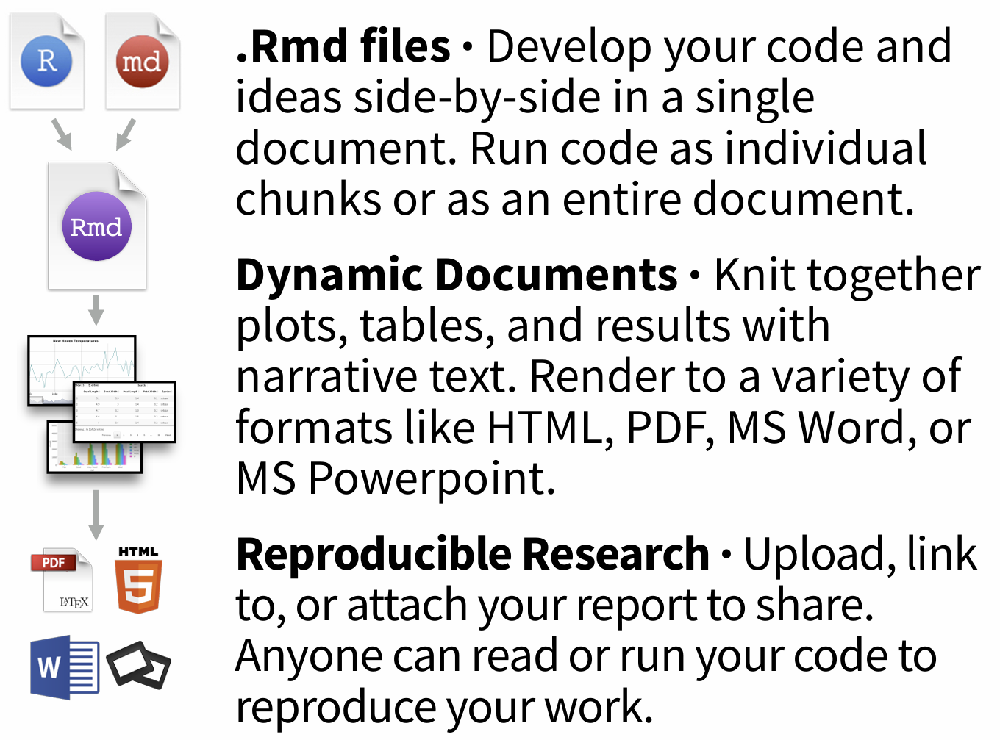
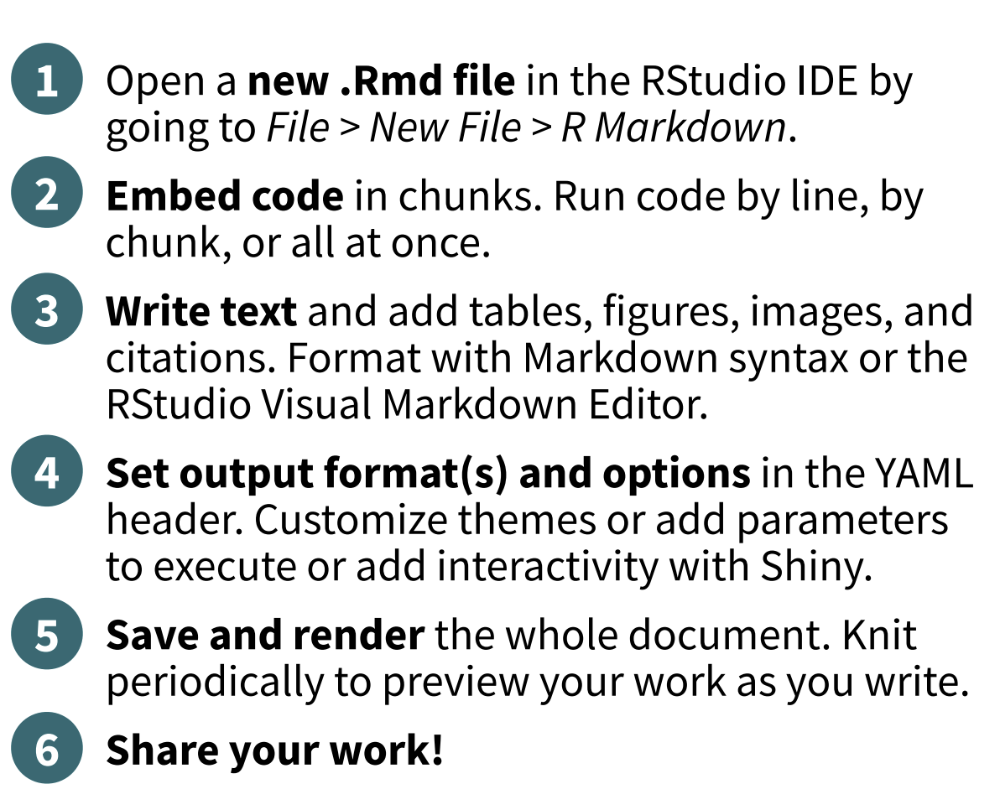

Lesson 3: Data Visualization
2026-09-15

Note
Each dataset has the same summary statistics (mean, standard deviation, correlation), and the datasets are clearly different, and visually distinct.

Graphics are an important tool for conveying information. Good figures can raise a scientific article and make its contents accessible to a larger audience.
Here you will learn the basics of producing publication-quality graphs with R.

If you saved “.RData” in your RStudio project folder last week, you can load it as below. It’s a good practice to start by emptying the workspace and then loading the data.
Otherwise, you can load the original “.csv”:
Let’s add a column so that every row has a unique ID.
Next, let’s extract the week number and add it as a new column to the existing table:
As you learned in the previous class, we can use conditions to subset data. For example, we could ask how many mammal species were recorded at least once.
How many survey days have at least one photo? How many deployment locations?
Let’s aggregate and find the number of observations per animal class or species.
Can you find the species with the most number of detection locations?
The plot() function is the basic function for generating plots in R.
The formula y∼x indicates to plot() that time (week) should be plotted on the x-axis as a function of the number of IDs on the y-axis.
We could also use aggregated tables for plotting to make more sense of the data.
Within the plot() function, you have a lot of options to customize the graph. See the examples below.
The default axes produced by plot() are often appropriate, but sometimes we want to have more control over the axes, including their position and scale. To create custom axes, set the axes argument in the plot() function to FALSE and then execute a separate axis() function for each axis.
Which axis was just added to the plot?
Similarly, add the second axis as shown below.
Finally, add the points to the already existing plot.
We can use plots for a graphical comparison between two groups. For example, we can plot the number of bird observations vs mammals’. We first plot the number of mammal records per survey week, and then add to the existing plot the number of bird records.
You can enrich the data part of your graphs by adding additional features such as colors, text, etc. This allows you to convey more information than just the usual 2 dimensions.
Let’s use a barplot to display the number of records for canids.
How about the number of records per week for bears?
You can add text (e.g., point labels) inside a plot. Let’s plot the weekly number of records per species (tab2) and flag the species with the most weekly records. One approach is to first use order() and see which species have over 1000 detections per week.
In the above plot, we have flagged the highest number of weekly records by adding the species name. Now, can you use colors to flag these points?
Let’s filter tab2 and keep canids and display the number of weekly records per canid species. You can pick one color for each input type from the color scale provided by function topo.colors().
Often, we display multiple graphs in multiple panels as part of the same figure. You can use the par() function to split your display into panels. In the previous table, let’s filter foxes and make one plot per fox species.
tip
You can open a new plot window, outside of R, with the windows() function. This can be helpful if you want to have multiple plots open simultaneously for comparison or if you want to see what your plot looks like given a certain size and aspect ratio.
We want to make it easy for the viewer to pick out the important relationships or differences in our figure. Aside from the features mentioned earlier in this lesson, you can control the appearance of a plot and thus the emphasis on its characteristics by changing the scaling of the axes and their aspect ratio. To see how important the choice of aspect can be, run the following code and then resize the plot window by stretching it out horizontally.
Although RStudio will allow you to save figures from the interface, exporting figures with dedicated functions will give you full control over size, resolution and other attributes. This is the way we tend to create figures for scientific articles and presentations. First, we run one of the figure export functions (e.g., tiff() to export a figure in TIF/tiff format). Here we specify the attributes of the figure.
tip
We close the plotting device using dev.off(), which finalizes and saves the image file. The resulting figure will not show up in R.
Practice
Using your own data, create at least 5 plots that demonstrate:
R Markdown lets you weave together code, output, and narrative text into a single reproducible document. Check out the cheatsheet.

